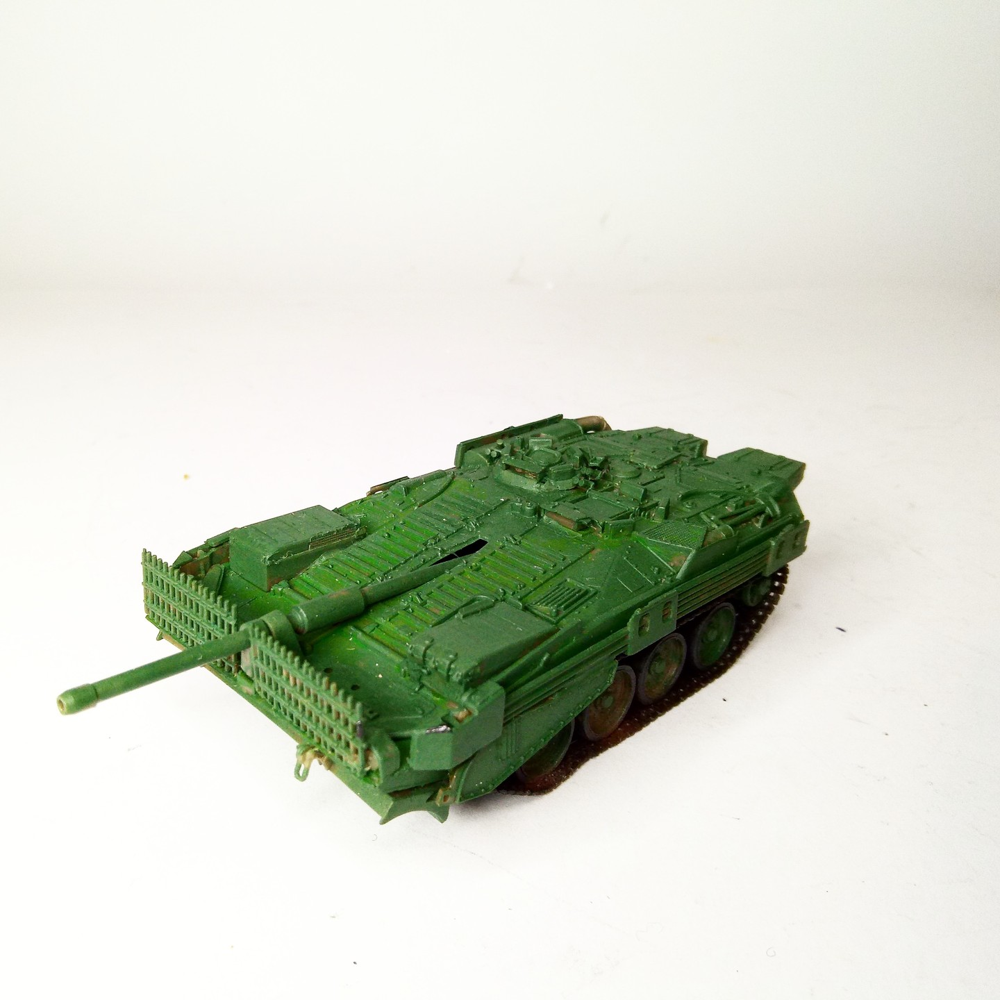
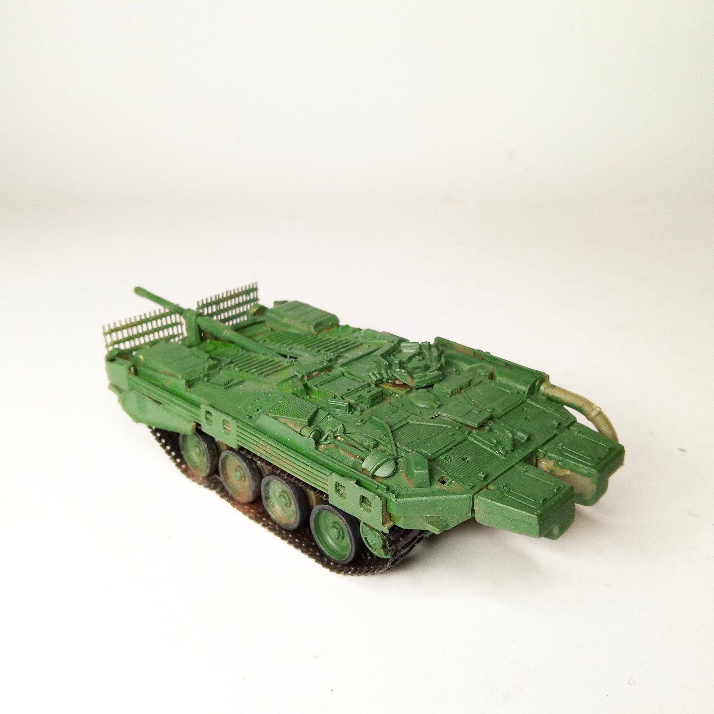

Mezzi militari · scale model archive
STRV 103 C tank
STRV 103 C tank — Kit: Trumpeter, Scale: 1/72. Swedish tank #1/72 #Trumpeter #STRV103

Photo gallery

English description
Swedish tank
#1/72 #Trumpeter #STRV103
Descrizione italiana
Carro svedese.